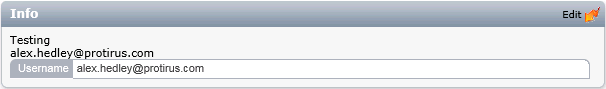

In this Article we will see how to style a WebPart to match the Process Manager (PM) theme.
Articles
- List
- Setup
- Simple
- Deploy
- Inspecting other WebParts
- Controls
- Styling a WebPart (this)
- WF/PM Connection String
- Connecting to SQL to retrieve data
Open Process Manager and navigate to a Ticket.
Right Click on the "Description & Resolution" and Inspect Element, use the Developer Tools of your Web Browser of choice but we wish to get the HTML used to render this section.
After some careful extraction we can get the HTML we need.
<table border="0" width="100%" class="pv_h_tbl1" cellspacing="0" cellpadding="0"><tr> <td valign="top" class="pv_h_pad0"> <table cellspacing="0" cellpadding="0" class="dg_tbl" width="100%"> <tr> </tr> <tr class="dg_row_first"> <td class="dg_label" width="100px"> <span>Description</span> </td> <td class="dg_data"> Blah Blah </td> </tr> </table> </td> </tr>
</table>
We need the classes used
- pv_h_tbl1
- pv_h_pad0
- dg_tbl
- dg_row_first
- dg_label
- dg_data
This is part of the following 'LogicBase.Ensemble.dll'. (Using the methods described in the Inspecting Article let's take a look.).
- LogicBase.Ensemble.dll
- LogicBase.Ensemble.Reports.WebParts
- LogicBase.Ensemble.Reports.WebParts.ProcessInfo
- LogicBase.Ensemble.Reports.WebParts
- LogicBase.Ensemble.Webparts.Default.dll
- Symantec.ServiceDesk.WebParts.dll
Check the OnPreRender method.
As you can see from the below we have all the classes used to build up a Table.
First create a Table and set some properties:
HtmlTable htmlTable1 = new HtmlTable();
htmlTable1.Border = 0;
htmlTable1.Width = "100%";
htmlTable1.Attributes["class"] = "pv_h_tbl1";
htmlTable1.CellPadding = htmlTable1.CellSpacing = 0;
Add a Row and a Cell.
HtmlTableRow row1 = new HtmlTableRow();
htmlTable1.Rows.Add(row1);
HtmlTableCell cell1 = new HtmlTableCell();
cell1.VAlign = "top";
cell1.Attributes["class"] = "pv_h_pad0";
row1.Cells.Add(cell1);
Create another Table to hold the information.
HtmlTable htmlTable2 = new HtmlTable();
cell1.Controls.Add((Control)htmlTable2);
htmlTable2.CellPadding = htmlTable2.CellSpacing = 0;
htmlTable2.Attributes["class"] = "dg_tbl";
htmlTable2.Width = "100%";
Add a Row.
HtmlTableRow row2 = new HtmlTableRow();
htmlTable2.Rows.Add(row2);
Add some cells and set some classes based on the row number.
HtmlTableRow htmlTableRow = new HtmlTableRow();
cell1 = new HtmlTableCell();
cell1.Attributes["class"] = "dg_label";
cell1.Width = "100px";
cell1.InnerText = "Username";
HtmlTableCell cell2 = new HtmlTableCell();
cell2.Attributes["class"] = "dg_data";
cell2.InnerText = UserName;
htmlTableRow.Visible = true;
htmlTableRow.Attributes["class"] = "dg_row_first";
htmlTable2.Rows.Add(htmlTableRow);
htmlTableRow.Cells.Add(cell1);
htmlTableRow.Cells.Add(cell2);
Finally add the Table to the WebPart.
this.Controls.Add((Control)htmlTable1);
This adds the UserName to a row.
- Table
There are the original items from previous Articles
- ContentText
- Label

If you compile the Project and add it to PM following the steps in the Deploy Article you can then inspect the webpage and check the HTML and see it matches the ProcessInfo WebPart.